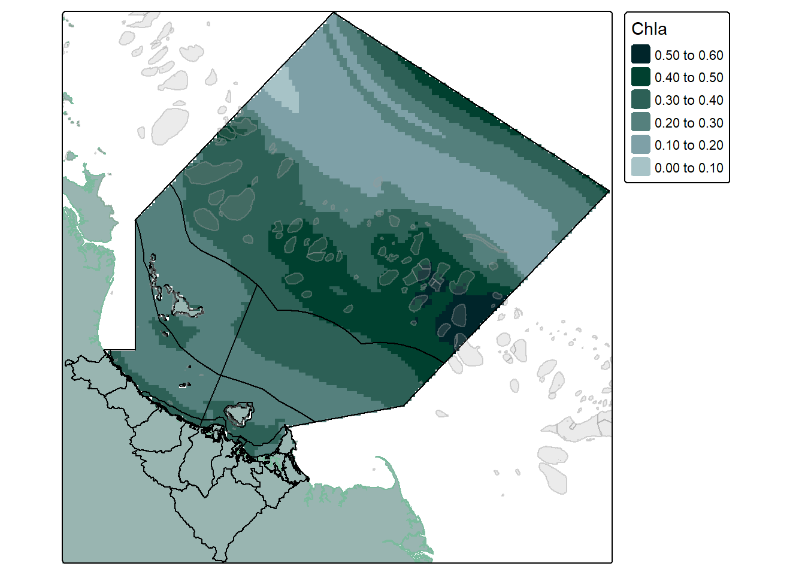

In this blog I demonstrate how you can make beautiful maps in R using example data extracted from the eReefs platform. You can also follow along with any of your own data.
1 Introduction
This is part three of a series of blog that focus on eReefs and the data it provides. To follow along with this blog you will need to be able to download data from eReefs, you can learn how to do that in my first blog; The Extraction of Highly Specialised Modeled Data from eReefs. I would also recommend that you check my blog about Plotting eReefs Data, however it is not essential reading for this post.
In this post I would like to explore the spatial aspect of eReefs data. Together we will learn some of the most important steps when working with this type of data as we:
Manipulate and transform spatial data,
Understand how to visualise the data, and
Build a series of informative maps
2 Read in Data
Thanks to our previous post about extracting the data, it is saved in our file system ready to open no stress, and we know exactly the preprocessing that we need to do:
Code
#load in the example dataexample_data <-read_stars("example_data.nc")#load vector of time valuestime_vals <-readRDS("time_vector.rds")#merge "attributes" (time) back togetherexample_data <-merge(example_data)#update time dimension values and namesexample_data <- example_data |>st_set_dimensions(3, time_vals,names =c("x", "y", "time"))#then update the attribute nameexample_data <-setNames(example_data, "Chla")
3 Analyse Data
There are few goals I have for analysing the data, I would like to be able to:
Manipulate data using the time dimension, i.e. extract certain dates
Manipulate data using spatial dimensions, i.e. extract certain areas
Aggregate data using the time dimension, e.g. getting monthly average values
Aggregate data using spatial dimensions, .e.g. getting average values per area
3.1 Layer Manipulation
Before we can get right into analysis or mapping we need to get a better understanding of the data structure and what we are looking at. Simply by calling the object we can already get a pretty good breakdown:
Code
#get a summary of the dataexample_data
stars object with 3 dimensions and 1 attribute
attribute(s), summary of first 1e+05 cells:
Min. 1st Qu. Median Mean 3rd Qu. Max. NA's
Chla 0.04715918 0.2284472 0.3236666 0.3413846 0.4579611 0.8344838 57762
dimension(s):
from to offset delta refsys x/y
x 1 161 408823 1426 GDA2020 / MGA zone 55 [x]
y 1 179 8051625 -1288 GDA2020 / MGA zone 55 [y]
time 1 365 2020-07-01 02:00:00 UTC 1 days POSIXct
A couple of things to point out here.
The object is a “stars object”, this is a class introduced by the stars package 1.1 stars objects hold attribute(s) and dimensions 1.1.1 attributes are our values (e.g. chlorophyll a), and there can be more than one 1.1.2 dimensions are our lat, long, depth, time, spectral band, etc. 1.2 This means stars objects can be n-dimensional and hold multiple attributes - which is a lot to think about
We can see the summary statistics for our attribute (chlorophyll a)
We can also see some information about our dimensions
To see the names of our dimensions we can use dim().
Code
#view the dimension names and lengthsdim(example_data)
x y time
161 179 365
and to see the names of our attributes we can use names().
Code
#view the names of the attributesnames(example_data)
[1] "Chla"
When we look to analyse our data we are going to have to think about all of our dimensions and any attributes. The simplest way to interact with each of these is using the [] square brackets. The first element in the brackets corresponds to the attributes, and each element following this is one of the dimensions (in the order in which you see them using dim()): stars_object[att, i, j, k, time].
If we wanted to get just the first time step, we would write stars_object[], , , , 1] where the blank entry just means give me all of it.
If we wanted the 2nd i, the 1st-5th j, and the 3rd time step, we would write stars_object[, 2, 1:5, ,3]
If we have more than one attribute we can call that by name in the first argument stars_object[att,,,,]
In this way we have a cursory method of manipulating the data, and can use this to squeeze out our first map:
Code
#make a simple palette using our website coloursmy_pal <-c("#A7C3C7", "#7EA0A7", "#55807D", "#2D6056", "#00402F", "#00252A")#create a simple map of the datatm_shape(example_data["Chla",,,1]) +tm_raster(col.scale =tm_scale_intervals(n =6,values = my_pal,label.format =list(digits =2)),col.legend =tm_legend(reverse = T))
Not bad, the shape might seem a bit odd but this is a result of the boundaries we originally used to extract the data. (Check the eReefs Extraction blog if you are curious). And just to be clear - if we don’t select just 1 time step we would get several maps:
Code
#create a simple map of the datatm_shape(example_data["Chla",,,1:4]) +tm_raster(col.scale =tm_scale_intervals(n =6,values = my_pal,label.format =list(digits =2)),col.legend =tm_legend(reverse = T))
However trying to do all of our analysis and manipulation this way would be very painful. Thankfully stars objects work with most tidyverse functions.
When we use the tidyverse method, knowing the exact names of our dimensions and attributes is the key for layer manipulation rather than their specific order. For example, if we wanted to once again extract one time layer of data, it is as easy as specifying the dimension we want to slice (“time”), and the slice number:
Code
#slice to get a single time stepsingle_timestep <- example_data |>slice(time, 1)#slice to get multiple time stepsmulti_timestep <- example_data |>slice(time, 1:10)
Code
#create a simple plot of the datatm_shape(single_timestep) +tm_raster(col.scale =tm_scale_intervals(n =6,values = my_pal,label.format =list(digits =2)),col.legend =tm_legend(reverse = T))
Although one downside here is that if you want to slice on multiple dimensions the calls must be run separately:
Code
#slice by latitude and time, not the slice_of_lat_and_time <- example_data |>slice(x, 1:30) |>slice(time, 1)
Code
#visualise the slice of lat and time tm_shape(slice_of_lat_and_time) +tm_raster(col.scale =tm_scale_intervals(n =6,values = my_pal,label.format =list(digits =2)),col.legend =tm_legend(reverse = T))
As we can seem using slice() just about covers all of our layer manipulation needs without much work… Layer aggregation is not going to be so easy…
Note
There are a few other functions from the tidyverse that can be used such as filter(), pull(), mutate(), and select(), but we won’t worry about those here, we will just focus on slice().
3.2 Layer Aggregation
As we explored above we have quite a few time steps, too many to plot all of them. Our initial solution to be able to create a map was to simply slice out a few layers, but obviously this is not a good solution if we are trying to learn something about the entire dataset. Instead, a common method to deal with this kind of problem (too much data) is to aggregate the data into a workable size.
There are two main ways to do this, the first method is to use st_apply() - this method is more general purpose and gives you greater control, it can apply all sorts of function and is not just limited to reducing dimensions. The second method is to use aggregate() - this method is easier to use, but has limits on what it can achieved. We will cover both as the more complicated method gives a very helpful conceptual grasp of the data.
3.2.1 st_apply()
The st_apply() function has three main arguments we are going to focus on:
X (the stars object),
MARGIN, and
FUN (the function to apply)
Arguments 1 and three are pretty self explanatory, but MARGIN is a bit more confusing so I have drawn up some diagrams to help the explanation. Lets first look at a conceptual diagram of our data.
In this diagram we can see each of our dimensions represented (latitude, longitude, depth, and time), and our attribute would be the value in the cell. Also note that for this diagram we have included multiple depth layers, but our actual data only has the one depth at the moment.
What MARGIN does, is ask “where do you want to apply the function?” As in what dimension. The dimension that you supply is the dimension that is preserved. For our data there are four margins to choose from:
1 = Latitude 2 = Longitude 3 = Depth 4 = Time
If we say MARGIN = 1, we are applying our function over latitude, and the resulting data will only retain the latitude dimension. It would look like this:
See how all of the cells that share the same latitude, but have different longitudes, times, or depths, are all combined into the same group.
If we say MARGIN = 2, we are applying our function over longitude, and the resulting data will only retain the longitude dimension. It would look like this:
This time note that all cells that share the same longitude, but have different latitudes times, or depths, are all combined into the same group.
MARGIN = 3 (depth) would look like this:
and MARGIN = 4 (time) like this:
Reasonably straight forward so far, but also largely unhelpful - none of these outputs retain data that is viable to be mapped. This is where things get a bit more intense, because you can actually supply multiple dimensions to the MARGIN argument, which allows for the preservation of multiple dimensions. For example, if we wanted to learn how our attribute changed as it moved offshore and how it changed over time we could say MARGIN = c(2,4) which would look like this:
See how both the time and the longitude dimensions are maintained, and only the latitude and depth dimensions are grouped up.
But probably the one we are most interested in is if we set MARGIN = c(1,2) (Latitude and Longitude) which would collapse the time and depth variables leaving us with one raster:
Note this time the depth and time dimensions are aggregated.
One final thing to note with the MARGIN argument is that while it can take numeric inputs, it can also take the names of the dimensions. So instead of saying MARGIN = c(1,2) we could instead say MARGIN = c("x","y") to be a bit more clear about what we are doing.
In fact, this is what we will do right now. Note the dimensions of our dataset before the function is run:
Code
#look at dimensionsexample_data
stars object with 3 dimensions and 1 attribute
attribute(s), summary of first 1e+05 cells:
Min. 1st Qu. Median Mean 3rd Qu. Max. NA's
Chla 0.04715918 0.2284472 0.3236666 0.3413846 0.4579611 0.8344838 57762
dimension(s):
from to offset delta refsys x/y
x 1 161 408823 1426 GDA2020 / MGA zone 55 [x]
y 1 179 8051625 -1288 GDA2020 / MGA zone 55 [y]
time 1 365 2020-07-01 02:00:00 UTC 1 days POSIXct
versus after:
Code
#take the mean over timechl_a_mean <-st_apply(example_data, c("x","y"), mean)#look at dimensionschl_a_mean
stars object with 2 dimensions and 1 attribute
attribute(s):
Min. 1st Qu. Median Mean 3rd Qu. Max. NA's
mean 0.0678172 0.09142314 0.1768633 0.1596316 0.1922283 0.3919046 17086
dimension(s):
from to offset delta refsys x/y
x 1 161 408823 1426 GDA2020 / MGA zone 55 [x]
y 1 179 8051625 -1288 GDA2020 / MGA zone 55 [y]
As we explained above, only the latitude and longitude dimensions remain. What we did was apply the mean function to the data, where the data is grouped by latitude and longitude (collapsing depth and time) to form pools of data to get the mean from. There is then one mean value for each latitude * longitude pair and we are left with a map that looks like this:
Code
#create a simple plot of the datatm_shape(chl_a_mean) +tm_raster(col.scale =tm_scale_intervals(n =6,values = my_pal,label.format =list(digits =2)),col.legend =tm_legend(reverse = T))
Congratulations, using this method we now have a way of aggregating our data - i.e. by getting the mean of all the data into a single spatial layer. But more importantly we now have a very good conceptual understanding of our data, and we also know how we would apply some really complicated functions across different dimensions. This is extremely useful when you move on to more in depth spatial analysis.
Unfortunately the single layer we aggregated to above doesn’t cut it. It returns an annual overview that doesn’t really tell us too much other than what locations have consistently higher chlorophyll a. No, instead we want to learn something about seasonal or monthly trends. To do this we need to provide some kind of indication to st_apply() that we want multiple groups.
This is achieved using the following steps:
Extract a table that contains the date and time of each layer
Group the individual layers by month and find the first and last layer per month:
Code
#extract a table that contains the date and time of each layertime_table <-data.frame(DateTime =st_get_dimension_values(example_data, "time"))#extract the year and month into their own columns, add a column that counts the row numbertime_table <- time_table |>mutate(Year =year(DateTime),Month =month(DateTime),RowId =row_number()) #combine the year and month columnstime_table <- time_table |>unite(YearMonth, "Year", "Month", sep ="_")#group by the YearMonth column and get the min and max row index (layer number) for each month, order by index numbertime_table <- time_table |>group_by(YearMonth) |>summarise(MinIndex =min(RowId),MaxIndex =max(RowId)) |>arrange(MinIndex)#visualise the datahead(time_table)
Use st_apply() to apply the mean function to all the layers in the month
Put this inside a map2() function to run the code for each month at the same time:
Code
#use map to work through each start-end index and use st_apply to apply the meanmonthly_chla <-map2(time_table$MinIndex, time_table$MaxIndex, function(a,b) {#apply mean to the data slicest_apply(slice(example_data, time, a:b),MARGIN =c("x","y"), #using margin x and y to keep lat and long informationFUN = mean,na.rm = T,keep = T)})
Combine the list output back into a single stars object:
Code
#bind the output into a single stars object. Note there are two "c"s here. The first (left) one binds the args. The second (right one) provides the args (list of stars object) plus the final argument (along = "time") which tells the first c to bind along a new dimension.monthly_chla <-do.call(c, c(monthly_chla, along ="time"))
Done! We can then visualise the data to confirm it worked:
Code
#create a simple plot of the datatm_shape(monthly_chla) +tm_raster(col.scale =tm_scale_intervals(n =6,values = my_pal,label.format =list(digits =2)),col.legend =tm_legend(reverse = T))
Seems good to me! Although we would likely have to fix up those layer names/dates.
Note
The st_apply() function is not limited to just the mean() function, or even just simple functions at all. It can take in any custom function that you write - provided it has been written to work with matrices. For example, you could run the min() function to get a map that shows the min value at each cell, or if your data has spectral bands you could write a function to calculate the NDVI value for a vegetation assessment. The possibilities are endless!
3.2.2 aggregate()
As noted earlier, the aggregate() function is a much simpler method for aggregating a stars object and returning data with a lower spatial or temporal resolution. This function works in a similar way, it also has three main arguments:
X (the stars object),
by, and
FUN (the function to apply)
… (additional arguments such as na.rm = T)
Again, arguments 1 and 3 are self explanatory, but the second argument is not. The “by” argument takes either an sf object (a spatial object) to do spatial aggregation, or a vector of grouping values. The sf object is fairly simple, it acts similar to a mask - anything inside the object is part of the group, anything outside is not. The vector is a bit more flexible, it could be a vector of time values - for temporal aggregation, or it could be a vector of latitude values for spatial aggregation, or a vector of longitude values for spatial aggregation. What it can’t be is more than one of those things, if you want a combination you must use the st_apply() method. To be fair, I cannot think of a single reason why you would want to supply a lat/long value for aggregation this way when st_apply is so much better, so we will effectively treat the “by” argument as either an sf object, or a time vector.
Lets first demonstrate this with a spatial object, for this we are going to need to load in an sf object, so lets just use the one we originally used to extract the data:
Code
#read in the dry tropics region dataset and update crs to projected cordsdt_region <-st_read("dt_region.gpkg") |>st_transform("EPSG:7855")
Reading layer `dt_region' from data source
`C:\Users\adams\OneDrive - drytropicshealthywaters.org\Documents\GitHub\website\posts\ereefs_mapping_data\dt_region.gpkg'
using driver `GPKG'
Simple feature collection with 32 features and 5 fields
Geometry type: MULTIPOLYGON
Dimension: XY
Bounding box: xmin: 146.1444 ymin: -19.70039 xmax: 148.2985 ymax: -17.62597
Geodetic CRS: GDA2020
Code
#demonstrate the aggregate function with an sf objectagg_example <-aggregate(example_data, dt_region, mean,na.rm = T)#create a simple plot of the datatm_shape(agg_example[,,1]) +tm_polygons(fill ="Chla", fill.scale =tm_scale_intervals(n =6,values = my_pal,label.format =list(digits =2)),fill.legend =tm_legend(reverse = T))
Which is kind of interesting as we can see that there must be a slight overlap between land and marine for those land polygons to contain values. However, generally I find I don’t use this method all that often - despite really wanting to find reasons too.
Of course, the other options is the temporal vector. This actually has some handy short cuts where you can supply a vector of time values, or just a simple string like “months”, or “5-days”, etc. For our purposes we will use the string “months” which seems to work just fine:
Code
#this aggregates data by monthagg_example_2 <-aggregate(example_data,by ="months", mean)
However due to weirdness inside the function before we can visualise the output we need to now fix the dimension values as they are out of order. Specifically, after the aggregation they are:
Code
#look at the dimensions of the objectdim(agg_example_2)
time x y
12 161 179
While we need them to be:
Code
#reorder dimensionsagg_example_2 <-aperm(agg_example_2, c("x", "y", "time"))#look at dimensionsdim(agg_example_2)
x y time
161 179 12
Once reordered, we can then visualise just fine:
Code
#create a simple plot of the datatm_shape(agg_example_2) +tm_raster(col.scale =tm_scale_intervals(n =6,values = my_pal,label.format =list(digits =2)),col.legend =tm_legend(reverse = T))
And look at that, we now have 12 layers with monthly mean concentration values, which much less effort than st_apply(), cool! However it should be noted that we also have much less control over this method, for example if we had ver specific date ranges, or lat and long values it might be a better idea to use the st_apply() function.
4 Map The Data
Okay so I know we have already mapped the data a bunch of times above, but I would like to explore the visuals just a little further before we round out this blog. Specifically, I would like to add some visual cues to provide a point of reference. These include:
The sf object that was initially used to extract the data
An sf object for the main land
An sf object for the coral reefs in the region
Lets load in each of these in from file as I have prepared them earlier:
Code
#read in the dry tropics region dataset and update crs to projected cordsdt_region <-st_read("dt_region.gpkg") |>st_transform("EPSG:7855")#read in the reefs datasetreefs <-st_read("reefs.gpkg")#read in the queensland border datasetqld <-st_read("qld.gpkg")
Following this, lets slap each of those onto the data.
Note
By the way, if you wanted to learn more about mapping using these tmap functions, you can check out my blog dedicated to the functions here
Code
#create a simple plot of the datatm_shape(qld) +tm_polygons(fill ="#99B5B1",col ="#7bba9d") +tm_shape(slice(agg_example_2, time, 1), is.main = T) +tm_raster(col.scale =tm_scale_intervals(n =6,values = my_pal,label.format =list(digits =2)),col.legend =tm_legend(reverse = T)) +tm_shape(dt_region) +tm_polygons(fill =NULL,col ="black") +tm_shape(reefs) +tm_borders(fill ="grey60",fill_alpha =0.2,col ="grey60",col_alpha =0.4)

Looking much better, we can see exactly where the coastline and the continental shelf is, where the reefs are, and have a good understanding of the overall region in which we are looking at.
I’ve created this map as a single layer so we can see the change a bit better, but now I will roll these changes out to the facet map as well.
Saving maps is no problem either, simply pass the mapping code into an object, and then use tmap_save():
Code
#create a simple plot of the dataour_final_map <-tm_shape(qld) +tm_polygons(fill ="#99B5B1",col ="#7bba9d") +tm_shape(agg_example_2) +tm_raster(col.scale =tm_scale_intervals(n =6,values = my_pal,label.format =list(digits =2)),col.legend =tm_legend(reverse = T)) +tm_shape(dt_region) +tm_polygons(fill =NULL,col ="black") +tm_shape(reefs) +tm_borders(fill ="grey60",fill_alpha =0.2,col ="grey60",col_alpha =0.4)#save the maptmap_save(our_final_map, "our_final_map.png")
5 Caveats
As always I would like to remind you to thoughtfully consider everything you read on the internet. This blog is my own work based on my own research into the topic. There may be practices I use that aren’t considered “best practice” that I am not aware of, and I highly recommend that you do further exploration into the topic if it is something that interests you.
Thanks For Reading!
If you like the content, please consider donating to let me know. Also please stick around and have a read of several of my other posts. You'll find work on everything from simple data management and organisation skills, all the way to writting custom functions, tackling complex environmental problems, and my journey when learning new environmental data analyst skills.